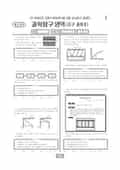

문제지

문항 검색 · 시험지 만들기준비하고 있어요. 열리면 아래 탭에서 바로 쓸 수 있어요.
2018학년도 6월 모의평가 · 2017년 6월 시행
2018학년도 6모 과학탐구 지구과학Ⅱ 1등급컷은 원점수 38점(추정), 표준점수 최고점은 81점입니다.
원점수 1등급컷은 공식 발표값이 아니라 EBSi·입시기관 값입니다. 등급별 값은 등급컷 표, 출처 구분은 데이터 원칙에 있습니다.

정답 변경 없음
이의신청 3문항
시험 전체 관련 보도 4건은 2018학년도 6월 모의평가 회차 페이지에 모아 두었어요.
한국교육과정평가원이 교육부 보도자료로 공개한 표준점수 도수분포로 계산했습니다.
EBSi 응답자 기준으로 가장 많이 틀린 문항은 20번(3점)이고, 오답률은 77.5%입니다. 상위 15문항 중 4문항은 정답보다 한 오답을 고른 사람이 더 많았습니다(20번: 정답 ④ 22.5%, ① 22.9%). 오답률 50%를 넘은 문항은 10개입니다.
| 순위 | 문항 | 배점 | 오답률 | 정답 | 많이 고른 오답 |
|---|---|---|---|---|---|
| 1 | 20번 | 3점 | 77.5% | ④ | ① 22.9% |
| 2 | 17번 | 3점 | 73.2% | ① | ③ 28.7% |
| 3 | 3번 | 3점 | 72% | ② | ④ 41.7% |
| 4 | 14번 | 2점 | 71.4% | ② | ④ 31.5% |
| 5 | 19번 | 3점 | 68.8% | ④ | ⑤ 22.8% |
| 6 | 16번 | 3점 | 67.8% | ④ | ⑤ 20.9% |
| 7 | 18번 | 3점 | 67% | ③ | ④ 17.1% |
| 8 | 8번 | 2점 | 54.9% | ① | ④ 23.2% |
| 9 | 7번 | 2점 | 52% | ⑤ | ② 11.3% |
| 10 | 10번 | 3점 | 51.2% | ① | ③ 13.8% |
| 11 | 11번 | 3점 | 49.9% | ⑤ | ③ 16.5% |
| 12 | 12번 | 3점 | 46.4% | ④ | ③ 11.6% |
| 13 | 1번 | 2점 | 44.3% | ③ | ⑤ 21.9% |
| 14 | 15번 | 3점 | 42.8% | ④ | ⑤ 10.6% |
| 15 | 6번 | 2점 | 41.5% | ③ | ⑤ 12.8% |
EBSi 가채점 응답자 기준 · 전 문항 중 오답률 상위 15문항
출처: EBSi 역대 등급컷·오답률 공개 화면. 가채점에 참여한 EBSi 이용자 응답이라 전체 응시자 정답률과는 다를 수 있습니다.
발행 기관: 한국교육과정평가원(KICE). 파일 위치: 이 사이트가 보관한 사본. 저작권은 발행 기관에 있습니다. 원본과 다르거나 게시 중단이 필요하면 연락처로 알려 주세요. 등급컷 출처 구분은 데이터 원칙에서 설명합니다.
막대 색은 역대 대비 난이도 · 진한 막대가 이 시험 · 막대를 누르면 그 회차로 이동
지구과학Ⅱ는 1등급 구분 표준점수 70점이었고 오답률 50%를 넘은 문항이 10개였습니다.
가장 많이 틀린 20번(3점, 77.5%)은 퇴적층 세 개가 분포한 지역의 지질도 문항, 17번(73.2%)은 북반구 중위도 상층 등고도면에서 두 등압선 사이의 바람을 다룬 문항이었습니다.
20번은 퇴적층 A, B, C가 분포한 지역의 지질도에서 단층과 지층의 두께, 생성 순서를 묻는 문항입니다. 지층 경계선과 등고선이 만나는 점들로 경사 방향을 읽으면 지층은 북동쪽으로 기울어 있습니다. 같은 지층이 끊긴 선을 사이에 두고 반복되는 것으로 단층을 찾을 수 있고, 단층면은 남서쪽으로 기울어 있어 정단층입니다(ㄱ). B층의 지표 노출 폭 100m와 경사각(sin 값 0.8)으로 계산한 실제 두께는 80m입니다(ㄴ). 지층이 북동쪽으로 기울어 있으므로 가장 남서쪽에 드러난 A층이 가장 오래되었고, C층이라고 한 ㄷ은 틀립니다. 정답은 ④입니다.
17번은 북반구 중위도 상층 등고도면에서 남북으로 나란한 두 등압선 사이에 남풍인 지균풍이 부는 상황입니다. 남풍과 평형을 이루는 기압 경도력은 동쪽에서 서쪽으로 작용하므로 서쪽의 ㉠이 동쪽의 ㉡보다 기압이 낮습니다(ㄱ). 두 등압선의 기압 차와 간격이 일정하므로 기압 경도력이 같고, 그와 평형을 이루는 전향력도 A, B, C에서 모두 같습니다. 그런데 전향력은 위도의 사인 값과 풍속의 곱에 비례하므로, 같은 전향력을 내려면 고위도로 갈수록 풍속이 작아야 합니다. 그래서 풍속이 같다는 ㄷ도 틀리고, 정답은 ①입니다.